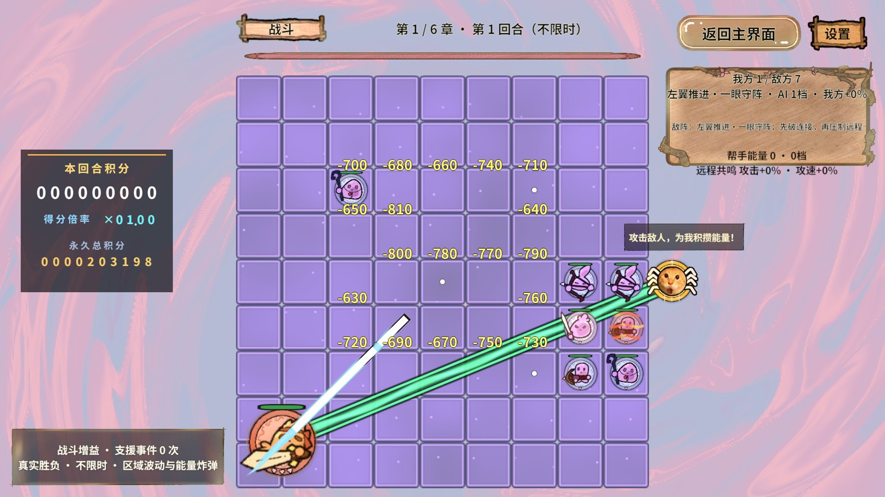
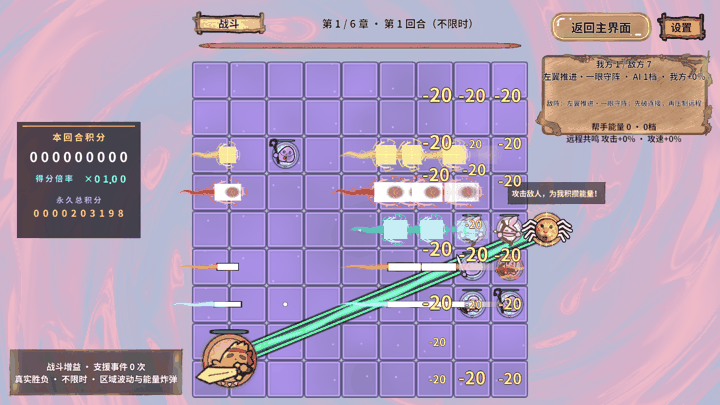
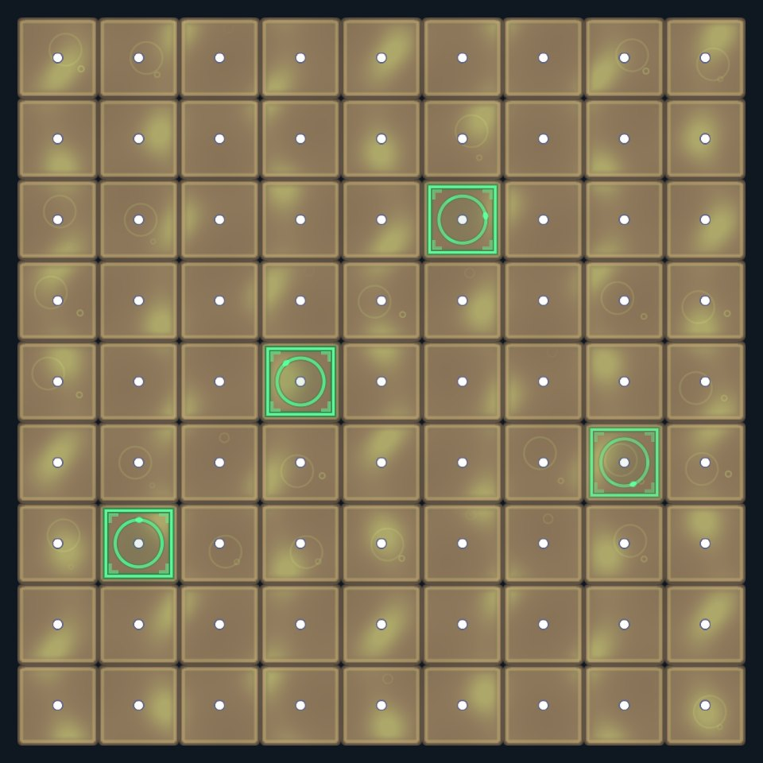
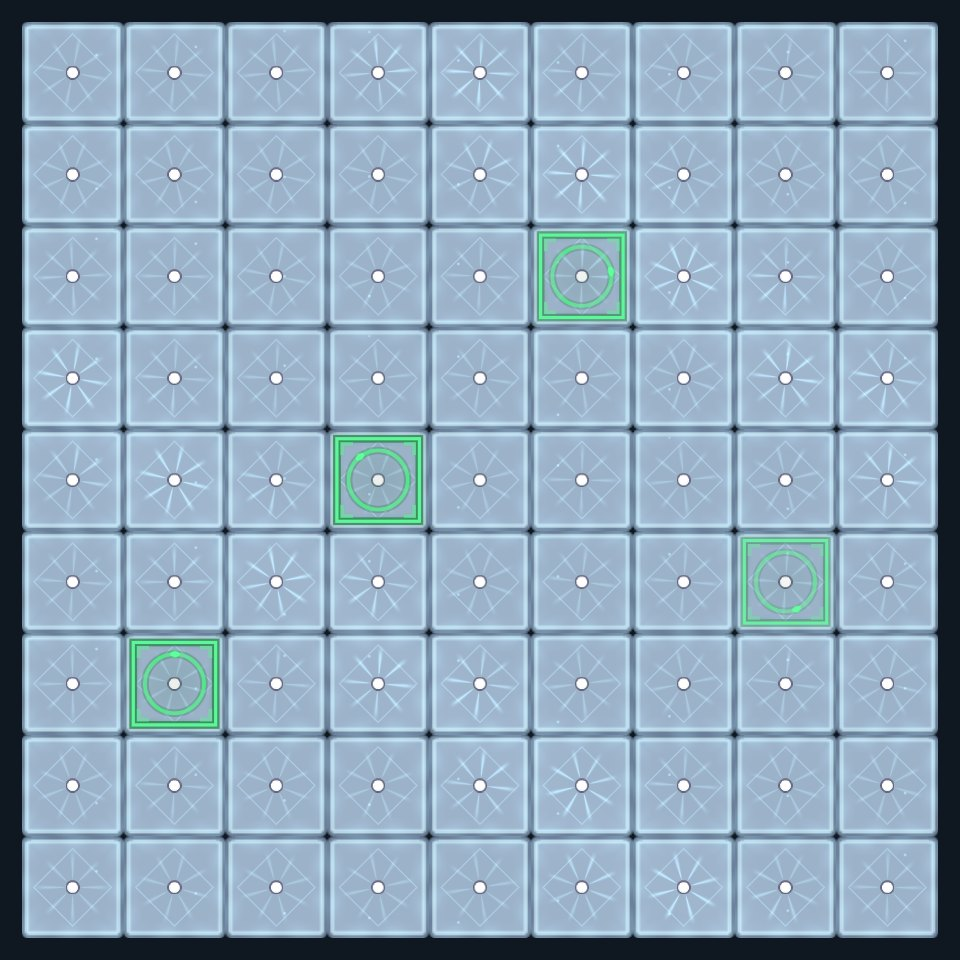

01 · 结论与证据边界
这次实现了战报有界缓存与复用 StringBuilder、计分倍率版本缓存和动态人数分支、弹道图集几何缓存、当前帧共享相机投影，以及保持画面的 Shader 数学与分支优化。服务、RevPool、RevResManager、FSM 架构继续使用，未修改 Revolution 内核。
计分稳定查询的实测阈值为 1 颗玩家棋：0颗直接计算，名单≥1颗检查收据后复用。四次独立数量曲线（.NET两次、Unity自带Mono独立宿主两次）均未出现“1颗更慢、多颗才更快”的交叉点。不能为满足预设结论编造8/16/32阈值。
目标仍为 i7-12700H＋Iris Xe 笔记本、1920×1080 Game窗口，80～90 FPS尚未验收。本次真实图形压测设备是 i7-13700＋RTX4060、Unity2022.3.15f1c1、DX11、PC AB。局部微基准百分比不能折算整帧或目标机收益。
最终源码通过实际Unity引用的外部编译检查；Editor本身15:42出现程序集引用错误，修正为固定类型反射后仍处于 compiling=true，未执行新阈值动作。独立Mono是Unity随附的运行时测试，不是Editor内执行。最终阈值版Editor/冷AB复验尚待完成。
02 · 为什么不能根据旧小样本直接定阈值
旧基准把原公式直接写在测试循环里，新公式通过服务属性调用，两者JIT内联与优化条件不同。曾得到36棋1.873/2.171ms的负结果，但新的同入口测试发现从1棋开始缓存更快。这是基准方法差异，不能只保留对优化有利的数据。
新夹具两路径都调用生产 ScoreMultiplier 属性，测试专用开关强制直算或缓存。人数1～81逐一造局；各路径预热2000次，每轮10万查询，7轮AB/BA交替，中位数汇总；第三组每次 TargetStateChanged 强制失效。CSV在所有计时结束后才生成，不在测量窗口拼字符串。
人数口径是玩家名单Count，不是双方总棋数；死棋尚未撤盘会保留在名单，因此缓存另核对生死版本。不同用途不能共享一个人数阈值：射界缓存涉及几何规则，战报缓存取决于文字重复率，计分缓存只是值字段。
03 · Mono数量阈值实测
每个数值是10万次查询的7轮中位数，不是每帧耗时。开发机Unity随附Mono，使用真实生产服务与导表配置、隔离宿主，无渲染/存档。
| 玩家棋数 | 直算ms | 稳定缓存ms | 第一轮减少 | 第二轮减少 | 每次失效ms |
|---|---|---|---|---|---|
| 1 | 3.378400 | 2.190800 | 35.153% | 35.328% | 3.937600 |
| 2 | 3.639300 | 2.193500 | 39.727% | 39.773% | 4.264600 |
| 4 | 4.036900 | 2.189900 | 45.753% | 46.086% | 4.762200 |
| 8 | 5.391300 | 2.199100 | 59.210% | 59.672% | 5.724200 |
| 16 | 8.922800 | 2.190000 | 75.456% | 72.937% | 9.356500 |
| 24 | 16.447900 | 2.264800 | 86.230% | 76.793% | 20.218400 |
| 36 | 21.263600 | 2.344200 | 88.976% | 89.441% | 23.459700 |
| 48 | 27.793100 | 2.283300 | 91.785% | 91.554% | 29.564900 |
| 64 | 34.009500 | 2.222400 | 93.465% | 93.385% | 35.500500 |
| 81 | 40.564300 | 2.313900 | 94.296% | 93.951% | 43.245500 |
04 · 新手读代码：切换与失效顺序
BattleService.Score.cs / ScoreMultiplier 先读名单Count，与 ScoreCacheThreshold=1 比较；低于阈值扫描并按原公式计算，达到阈值进入 ReadScoreMultiplierCached。发行构建不提供强制测试开关。算法阈值不是策划伤害参数。
缓存收据包含 TopologyVersion（占格变化）、TargetVersion（生死/可见变化）、名单Count，及章回、RoundsPerChapter、倍率Cap、RoundGrowth、PieceGrowth。先检查人数是否过期，必要时扫描存活人数；再检查公式输入，没变直接返回浮点倍率。原运算顺序保持，防浮点四舍五入变化影响积分。
0→1→0→1回归检验真实默认分支，返回缓存时重新核对收据，不能沿用切换前人数。新增/移除、致死尚未Remove、复活、章回变化也覆盖。TargetVersion保守包含隐藏变化，多算可以接受，漏算不可以。
每次失效时缓存要付出检查＋重新扫描的成本，人数阈值不能解决所有失效分布。实际81压力稳定采样计分27,688次命中、0次人数扫描（预热后窗口），支持当前稳定查询策略；动态正常玩法不保证同命中率。当前没有再引入每击Stopwatch的自适应计时，以免观察器成为新热点。
05 · 战报：StringBuilder与缓存分别省什么
BattleService.LogCache.cs / FormatAttackLog 是每局服务拥有的256条FIFO字典。键含攻击者/目标显示名、实际扣血、锁死状态和倍率。只保存值与文字，避免保留死棋或Unity对象。
命中直接返回不可变字符串，不Clear、不Append、不ToString；未命中淘汰最旧键，复用128起始容量StringBuilder，生成一次最终文本。容量是有界工作集，不允许无限保存历史伤害。实际伤害战报不套表现层×10，规则结算也不变。
StringBuilder仍会在ToString时产生最终字符串，锁死倍率格式化也有必要的新键分配；真正避免重复分配靠缓存。10万次8种重复战报.NET旧拼接分配12,000,000B，热缓存0B；不宣称整个Unity零GC。
负结果保留：旧拼接2.572ms，字典缓存5.778ms；最新复测4.403/6.263ms。字典哈希在这个微基准CPU更贵，当前保留它是减少高频短命字符串，而非宣称CPU加速。真实12段日志29,838次命中、2次未命中；没有按棋子数关闭缓存并恢复每击分配。
06 · 弹道样式：从每次发射到按绑定版本计算
BattleEffectView.ProjectileAppearance 为每种共享样式保存Sprite、绑定版本、尺寸与UV。GameSpriteAtlasService.BindingVersion在创建/注册/释放变化，EnsureGeometry只有Sprite或版本变化才读取图集几何。
Body/Trail/Aura共享材质上的_SpriteUV仅在重新绑定时更新；SpriteRenderer自身处理_MainTex，避免材质持有已释放Texture。每次发射SetPropertyBlock(null)撤掉重复UV块，减少逐Renderer参数差异。五职业真实packed Sprite与共享UV已回归。
合批有透明排序、材质、贴图、顶点等条件，减少参数差异只消除一个障碍。没有为了合批调乱弹幕前后或强开实例化；当前实际实例化批次仍为0，整场DrawCall约37没有显著降低。
07 · 投影：一帧借同一份相机收据
FeedbackProjection 由BoardView独占，LateUpdate采一次世界→相机、相机→裁剪矩阵、视口与正交比例。同帧20条文字读取这份快照，各自只算自身位置/缩放/旋转/字形范围。
WorldToScreen先VP乘齐次向量，再除w，映到有偏移的pixelRect。矩阵顺序不能反，不能用Screen.width假定相机铺满窗口。w≈0防NaN；本项目前方文字实测与Unity原生投影误差小于0.01像素。
Frame必须等于Time.frameCount且Camera身份相同；旧帧、先于棋盘LateUpdate或不适配场景回退原生路径。回池清_projection，不能让池文字保活旧棋盘相机。缓存投影不意味着镜头移动停止更新。
08 · Shader与GPU优化为什么保持画面
RangedProjectile.shader：尾迹/外圈颜色本来就被覆盖，跳过无效Sprite采样；保留弹体纹理与透明边缘。BoardMagicCommon用连乘计算四次方/八次方，并在BossPulse≤0.001时跳过脉冲计算。
沼泽格面：随机种子满足密度条件后才算旋涡/气泡的length、sin；保持原step阈值。冰原格面：同一cell的种子复用，power8代替通用pow。背景原画、油光、雪与波动仍保留。
BoardCellView.ClearBossTile在覆盖效果结束后撤销PropertyBlock，让格子恢复共享状态；不能为批次减少省略技能态参数。真实SoulDrain/PoisonMarsh覆盖与回收测试通过。
这类改动减少重复数学/采样，不代表GPU瓶颈已经消除。当前开发机GPU很快，必须在Iris Xe测量相同像素负载才能给出目标机收益。
09 · 六章81棋真实AB持续对射
完整六章各2轮、每段20秒，81棋/81视图/81独立攻击者，峰值20文字/35弹道，近战0（此夹具全远程，16预算仍保留）。completed/cleaned=true、errors=0。基线仅各章1轮，因此只有第一轮列观测变化。不是统计显著的净收益证明。
| 章 | 轮 | FPS | P95 ms | GPU P50 ms | DrawCall | 动态批次 | 首轮FPS变化 |
|---|---|---|---|---|---|---|---|
| 1 | 0 | 388.83 | 3.536 | 0.844 | 36.78 | 11.01 | -3.03% |
| 2 | 0 | 367.70 | 3.763 | 0.829 | 37.35 | 11.20 | +0.37% |
| 3 | 0 | 364.28 | 3.832 | 0.874 | 37.52 | 11.39 | -2.03% |
| 4 | 0 | 358.04 | 4.037 | 0.938 | 37.43 | 11.35 | -1.17% |
| 5 | 0 | 341.61 | 4.202 | 0.944 | 38.48 | 11.35 | -3.88% |
| 6 | 0 | 369.57 | 3.832 | 0.864 | 37.69 | 11.43 | +4.80% |
| 1 | 1 | 375.15 | 3.773 | 0.840 | 36.80 | 11.01 | 基线仅一轮 |
| 2 | 1 | 373.51 | 3.703 | 0.812 | 37.35 | 11.19 | 基线仅一轮 |
| 3 | 1 | 361.70 | 3.870 | 0.863 | 37.57 | 11.40 | 基线仅一轮 |
| 4 | 1 | 345.63 | 4.096 | 0.949 | 37.50 | 11.32 | 基线仅一轮 |
| 5 | 1 | 364.77 | 3.867 | 0.874 | 38.52 | 11.35 | 基线仅一轮 |
| 6 | 1 | 360.52 | 3.869 | 0.878 | 37.61 | 11.42 | 基线仅一轮 |
10 · 棋盘格面Shader隔离诊断
4/5章各4轮15秒ABAB，诊断时临时换格面材质，finally恢复。第4章移除格面没有收益；第5章GPU差约0.071ms/7.7%，只说明诊断样本中的格面成本，不能算生产优化收益。
| 章 | 轮 | 模式 | GPU P50 ms | 帧P95 ms |
|---|---|---|---|---|
| 4 | 0 | 原格面 | 0.903 | 3.805 |
| 5 | 0 | 原格面 | 0.938 | 4.558 |
| 4 | 1 | 临时默认格面 | 0.940 | 4.071 |
| 5 | 1 | 临时默认格面 | 0.865 | 4.074 |
| 4 | 2 | 原格面 | 0.880 | 3.909 |
| 5 | 2 | 原格面 | 0.903 | 4.111 |
| 4 | 3 | 临时默认格面 | 0.922 | 4.144 |
| 5 | 3 | 临时默认格面 | 0.834 | 3.785 |
11 · 长帧没有被错误归因
有效复测两次>33ms：第4章39.278ms（GPU1.036、main1.572、PlayerLoop2.288ms、GC131015B）；第5章35.495ms（GPU0.878、main5.458、PlayerLoop15.663ms、GC20253B）。同帧/滞后计数不能证明GC触发停顿，GPU数值也不足以解释墙钟长帧。
EditorLoop Recorder全为0，本次计数不可用于归因，不能解释为编辑器无成本。此前258ms突停尚缺有效线程/系统调度证据。后续要在目标机独立Player与Editor对照、看温度/频率/主渲染线程同步，不能把所有暂停归GPU。
先前首次after测量在第三章发生automation inbox文件sharing violation，只完成两章，整体失败；随后重跑完整12段通过。首个失败与未完成轮次保留，未拿局部最好样本覆盖失败。
12 · 代码与验收索引
核心新增类、字段、方法与关键算法已写中文用途、单位/范围、所有者、失效原因与失败路径注释。GameFlow附加注释不改变流程行为。
| 文件（Assets相对） | 关键入口 | 新手理解重点 |
|---|---|---|
| GameScripts/Services/Battle/Scoring/BattleService.Score.cs | ScoreMultiplier / ReadScoreMultiplierCached | 计分责任、输入版本、阈值切换、失效顺序 |
| GameScripts/Services/Battle/Scoring/BattleService.LogCache.cs | AttackLogKey / FormatAttackLog | 完整键、服务所有者、256上限、FIFO与Builder复用 |
| GameScripts/Services/Battle/Diagnostics/BattleService.CacheThresholdChecks.cs | MeasureScoreCacheThreshold | 真实两路径、预热、AB/BA、中位数、窗口外CSV |
| GameScripts/Services/Battle/Diagnostics/BattleService.CacheChecks.cs | VerifyPresentationCaches | 0/1边界、死而未撤盘、复活、章回、文案逐字 |
| GameScripts/View/Combat/Effects/FeedbackProjection.cs | Capture / WorldToScreen | 当前帧寿命、相机矩阵与像素单位 |
| GameScripts/View/Combat/Effects/BattleEffectView.cs | EnsureGeometry / projection use | 图集绑定失效、共享材质、旧帧回退与回池 |
| GameScripts/View/Resources/GameSpriteAtlasService.cs | BindingVersion | 注册/释放对称，迟到绑定使几何缓存失效 |
| GameScripts/View/Text/GameTextConfig.cs | FormatDamage | 128有界模板结果缓存、仅miss格式化 |
| Editor/RevGame/GameBattleMeasuredChecks.cs | BeginBoardProbe / samples | 预分配统计、有效样本、恢复材质、完整收尾 |
| Editor/RevGame/ResourceBuild/GamePerformanceAutomation.cs | CacheThreshold | asmdef不可直接依赖Assembly-CSharp，固定反射桥 |
| GameShader/Board / Combat | power4/power8 / seed branch / trail branch | 减少无效片元计算，保留透明排序与原阈值 |
13 · 测试覆盖与尚未完成事项
最终离线查询/缓存：32,062条断言通过。180回合三种子服务回放179胜1负，JSON与修改前逐字段完全相同，不仅比较胜率。实际Unity引用的runtime/editor/resource三个外部源码编译exit=0。
阈值之前：真实反馈7,298条Play断言，五职业共享UV/无重复参数块/投影一致、20/35峰值/回收；六章动态背景4秒前后像素差；第4章两个技能覆盖测试，无新增错误，完成清理。真实59个PC AB于15:15构建并复制。
阈值之后：Editor编译状态一直未解除，最终Editor测量与重新构建/冷加载未执行。15:42曾引用错误，修正后外部编译成功不代替Editor验收。新增注释让字体子集重新生成，但最后PC字体包未再次生成，此项明确待最终构建同步。发布验收不能视为完成。
未新增ZIP、Profiler原始录制或内存快照；JSON/CSV/编译日志放忽略的.codex/work，报告仅保留HTML、Markdown及必要截图/GIF。源码阈值可以再通过实际注册的game.perf.cache-threshold复测；先等编译并重新发现能力。
14 · 框架可行性与下一步重点
本轮性能能力全部在项目服务、棋盘视图和受控Editor夹具内实现；对象池、资源引用计数、流程域和事件继续复用Revolution门面。框架可行性证据是这些业务与真实AB可运行、可测试、可收尾，尚未等价于目标低端GPU验收。
下一步优先完成目标机同输入复验与最终冷AB门禁，再根据有效GPU/渲染线程证据处理透明覆盖、格面片元与材质切换。当前DrawCall并未明显下降，不声称已降到最低；继续合批必须保持透明顺序与画面。四次数量曲线支持当前计分阈值1，后端/公式改变时需重测。
15 · 当时的视觉证据




16 · 全部81数量记录
展开第一轮Mono完整曲线（10万查询）
| 玩家棋 | 直接ms | 缓存ms | 减少% |
|---|---|---|---|
| 1 | 3.378400 | 2.190800 | 35.153 |
| 2 | 3.639300 | 2.193500 | 39.727 |
| 3 | 3.813900 | 2.191400 | 42.542 |
| 4 | 4.036900 | 2.189900 | 45.753 |
| 5 | 4.300400 | 2.190900 | 49.054 |
| 6 | 4.464300 | 2.191100 | 50.920 |
| 7 | 4.926500 | 2.192000 | 55.506 |
| 8 | 5.391300 | 2.199100 | 59.210 |
| 9 | 6.870800 | 2.193600 | 68.074 |
| 10 | 7.275500 | 2.193700 | 69.848 |
| 11 | 7.814700 | 2.189400 | 71.984 |
| 12 | 7.952700 | 2.187300 | 72.496 |
| 13 | 8.252300 | 2.188500 | 73.480 |
| 14 | 6.909400 | 2.187200 | 68.345 |
| 15 | 8.246600 | 2.191300 | 73.428 |
| 16 | 8.922800 | 2.190000 | 75.456 |
| 17 | 9.189500 | 2.189700 | 76.172 |
| 18 | 9.359400 | 2.189600 | 76.605 |
| 19 | 9.571000 | 2.192300 | 77.094 |
| 20 | 9.779100 | 2.187400 | 77.632 |
| 21 | 8.738700 | 2.191700 | 74.920 |
| 22 | 8.791800 | 2.187600 | 75.118 |
| 23 | 9.130500 | 2.191300 | 76.000 |
| 24 | 16.447900 | 2.264800 | 86.230 |
| 25 | 16.904800 | 2.265200 | 86.600 |
| 26 | 17.962800 | 2.479000 | 86.199 |
| 27 | 19.908600 | 2.398300 | 87.953 |
| 28 | 18.156000 | 2.484400 | 86.316 |
| 29 | 19.307100 | 2.418200 | 87.475 |
| 30 | 19.997200 | 2.475700 | 87.620 |
| 31 | 19.986500 | 2.358700 | 88.199 |
| 32 | 20.773600 | 2.250900 | 89.165 |
| 33 | 20.237100 | 2.506000 | 87.617 |
| 34 | 20.047300 | 2.212600 | 88.963 |
| 35 | 20.717800 | 2.333100 | 88.739 |
| 36 | 21.263600 | 2.344200 | 88.976 |
| 37 | 22.261500 | 2.348800 | 89.449 |
| 38 | 24.722600 | 2.372400 | 90.404 |
| 39 | 24.356700 | 2.453300 | 89.928 |
| 40 | 24.329600 | 2.446900 | 89.943 |
| 41 | 23.858500 | 2.259500 | 90.530 |
| 42 | 24.358100 | 2.219900 | 90.886 |
| 43 | 24.357200 | 2.241400 | 90.798 |
| 44 | 27.030300 | 2.361000 | 91.265 |
| 45 | 25.987100 | 2.331200 | 91.029 |
| 46 | 27.083500 | 2.232100 | 91.758 |
| 47 | 26.192000 | 2.258900 | 91.376 |
| 48 | 27.793100 | 2.283300 | 91.785 |
| 49 | 27.973800 | 2.288500 | 91.819 |
| 50 | 28.132800 | 2.243600 | 92.025 |
| 51 | 30.011800 | 3.167300 | 89.446 |
| 52 | 30.912500 | 2.487400 | 91.953 |
| 53 | 28.514400 | 2.303300 | 91.922 |
| 54 | 31.266000 | 2.314000 | 92.599 |
| 55 | 29.872800 | 2.268400 | 92.406 |
| 56 | 31.353400 | 2.285300 | 92.711 |
| 57 | 31.371300 | 2.652900 | 91.544 |
| 58 | 32.712200 | 2.325500 | 92.891 |
| 59 | 31.752200 | 2.233600 | 92.966 |
| 60 | 31.140900 | 2.282300 | 92.671 |
| 61 | 32.626800 | 2.209300 | 93.229 |
| 62 | 32.343100 | 2.305200 | 92.873 |
| 63 | 36.962200 | 2.394100 | 93.523 |
| 64 | 34.009500 | 2.222400 | 93.465 |
| 65 | 33.127700 | 2.301200 | 93.054 |
| 66 | 36.259400 | 2.218500 | 93.882 |
| 67 | 34.628500 | 2.220100 | 93.589 |
| 68 | 35.178500 | 2.279500 | 93.520 |
| 69 | 35.137000 | 2.281700 | 93.506 |
| 70 | 38.443100 | 2.399300 | 93.759 |
| 71 | 36.330800 | 2.229800 | 93.863 |
| 72 | 36.331700 | 2.255400 | 93.792 |
| 73 | 36.313500 | 2.238700 | 93.835 |
| 74 | 36.925400 | 2.313800 | 93.734 |
| 75 | 37.791700 | 2.258300 | 94.024 |
| 76 | 37.734800 | 2.251400 | 94.034 |
| 77 | 39.202800 | 2.335300 | 94.043 |
| 78 | 37.758400 | 2.266900 | 93.996 |
| 79 | 39.207100 | 2.343000 | 94.024 |
| 80 | 40.468400 | 2.321600 | 94.263 |
| 81 | 40.564300 | 2.313900 | 94.296 |